redist 101
“There are a handful of college professors who even have the expertise to run [redistricting] simulations in the first place.”
—lawyer from oral arguments before the Supreme Court in Merrill v. Milligan
This vignette introduces algorithmic redistricting analysis using the redist package. It also demonstrates the alarmdata package, which downloads ready-to-use redistricting data and simulations from the ALARM Project’s 50-State Redistricting Simulations.
Overview
Why Simulate?
When attempting to detect gerrymandering, we want to determine whether a certain district map is unfair. But what makes a map unfair, and how do we identify whether a map is unfair? The problem is that it is not obvious what standard to which we should compare an existing map.
The key challenge is constructing a counterfactual. We want to compare an existing map to a set of alternative redistricting plans that are drawn following the same rules as those used in the actual redistricting process.
One potential solution is to list all possible plans. Unfortunately, this is impossible in most cases because the number of potential plans tends to be astronomically large. Even under a simple scenario in which an 8-by-8 checkerboard is split into two contiguous districts, the number of unique plans totals over \(1.2 \times 10^{11}\) (Fifield et al., 2020). In real-world redistricting problems, we often deal with thousands of administrative units. Thus, enumerating all potential plans is unrealistic.
Another idea might be to compare the plan under question to plans adopted in other states, or to plans that were used in the same state in the past. This is, again, is a misleading approach because the geographical distributions of voters differ across different states and different time periods. Moreover, each state follows its own rules for redistricting, and we cannot justify comparing plans that were drawn under different rules (Kenny et al., 2022).
Therefore, we would want to sample plans that follow the same rules used in the real redistricting process and that are based on the real distribution of voters in the same state, in the same time period.
Simulations make this possible. Using simulations, we can obtain a representative sample of redistricting plans that follow the constraints that are used in the actual redistricting process such as:
- Contiguity (Making sure that districts are contiguous)
- Population parity (Making sure that districts have equal population)
- Limiting administrative boundary splits
- Other idiosyncratic requirements, such as connecting counties by transportation links
Typically, we draw a few thousand plans in each state, making sure that the plans are unique and that the sample is representative. Then, we compare the simulated plans with the enacted/proposed map to see whether, for example, the map under question disproportionately favors one group over another. For a more intuitive explanation of simulations, check out this Washington Post article titled “Can computer simulations help fix democracy?”. The article talks about how Prof. Kosuke Imai, head of the ALARM Project, served as an expert witness in a redistricting litigation in Ohio.
Evaluating Plans
After we obtain a representative sample of redistricting plans, we can detect whether the map under question was gerrymandered by comparing the map with the simulated plans. redist and its associated packages are equipped with tools that allow you to conduct and visualize such analysis. The metrics used in such analysis include:
- The number of seats that each party is expected to win under the enacted/proposed plan and the simulated plans
- The two-party vote margin in each district, which is useful when trying to identify whether specific groups of voters have been packed into a small number of districts or splintered into numerous districts
- The efficiency gap, which represents the degree to which the votes cast for each party are wasted
- The partisan bias of plans, which quantifies the excess seat share per party relative to the party’s vote share
We can conclude that there is evidence of gerrymandering if the map under question is a clear outlier relative to the simulated plans. Check out how we conduct these types of analysis in our 50-State Simulation Project.
References and Further Reading
Fifield, B., Imai, K., Kawahara, J., & Kenny, C. T. (2020). The Essential Role of Empirical Validation in Legislative Redistricting Simulation. Statistics and Public Policy, 7(1), 52–68. https://doi.org/10.1080/2330443X.2020.1791773
Kenny, C. T., McCartan, C., Simko, T., Kuriwaki, S., & Imai, K. (2022). Widespread Partisan Gerrymandering Mostly Cancels Nationally, but Reduces Electoral Competition. https://doi.org/10.48550/ARXIV.2208.06968
Redistricting Simulation Workflow
Before starting, we need to load the following packages, which contain the functions necessary to conduct the simulations.
library(tidyverse)
library(alarmdata)
library(redist)Building Data Objects
redist_map
The first step in a redist analysis is to create the redist_map object, which stores the basic parameters of the redistricting problem. Here, we use redist_map objects that can be downloaded from the 50-State Redistricting Simulations using the alarmdata package.
map_nc <- alarm_50state_map("NC")
print(map_nc)To be partitioned into 14 districts with population between 745,670.6 - 0.5% and 745,670.6 + 0.5%
With geometry:
bbox: xmin: 124003.2 ymin: 821.8034 xmax: 935804 ymax: 318096.6
projected CRS: NAD83(HARN) / North Carolina
# A tibble: 2,666 × 59
GEOID state county muni county_muni cd_2010 vtd pop pop_hisp pop_white
* <chr> <chr> <chr> <chr> <chr> <int> <chr> <dbl> <dbl> <dbl>
1 370010… NC Alama… <NA> Alamance C… 6 0000… 5135 251 4420
2 370010… NC Alama… <NA> Alamance C… 6 0000… 4771 190 4225
3 370010… NC Alama… <NA> Alamance C… 6 0000… 5427 231 4536
4 370010… NC Alama… <NA> Alamance C… 6 0000… 3399 179 2926
5 370010… NC Alama… <NA> Alamance C… 6 0000… 4456 318 3675
6 370010… NC Alama… <NA> Alamance C… 6 0000… 4741 521 2491
7 370010… NC Alama… <NA> Alamance C… 6 0000… 6190 1506 2655
8 370010… NC Alama… 21095 Alamance C… 6 0000… 8320 596 6321
9 370010… NC Alama… 09060 Alamance C… 6 0000… 2755 161 2256
10 370010… NC Alama… 21095 Alamance C… 6 0000… 5578 262 4539
# ℹ 2,656 more rows
# ℹ 49 more variables: pop_black <dbl>, pop_aian <dbl>, pop_asian <dbl>,
# pop_nhpi <dbl>, pop_other <dbl>, pop_two <dbl>, vap <dbl>, vap_hisp <dbl>,
# vap_white <dbl>, vap_black <dbl>, vap_aian <dbl>, vap_asian <dbl>,
# vap_nhpi <dbl>, vap_other <dbl>, vap_two <dbl>, pre_16_rep_tru <dbl>,
# pre_16_dem_cli <dbl>, uss_16_rep_bur <dbl>, uss_16_dem_ros <dbl>,
# gov_16_rep_mcc <dbl>, gov_16_dem_coo <dbl>, atg_16_rep_new <dbl>, …As shown above, redist_map (and shapefiles) looks like a dataframe with many columns, such as population and geographical information.
For example, the geometry column contains the geographic shapefile information, which can be mapped as a POLYGON (or MULTIPOLYGON) shape of the geographical area.
head(map_nc$geometry)Geometry set for 6 features
Geometry type: MULTIPOLYGON
Dimension: XY
Bounding box: xmin: 560601.5 ymin: 232341.7 xmax: 586454.5 ymax: 277431.7
Projected CRS: NAD83(HARN) / North Carolina
First 5 geometries:Shapefiles and Projections
If you want to use the other shapefile data for the redistricting analysis (other countries, etc.), you need to transform the available shapefiles (census data, etc.) into a redist_map object.
As there are multiple formats of shapefiles, you may also need to convert and adjust them into a unified format. For example, projections must be in the same style. For more information, check pp.17-18 of this presentation for the workshop.
Adjacency List
Since districts are generally required to be contiguous, all redist algorithms require an adjacency graph, which is constructed from the geography of the actual precincts (or other redistricting unit).
What is adjacency? It is the formalization of contiguity. Two units are adjacent if they are contiguous geographically.
Let’s check what the adjacency list looks like. The adj column of redist_map is the adjacency list.
head(map_nc$adj)[[1]]
[1] 1 4 18 19 423 997 1994
[[2]]
[1] 0 4 10 13 30 997 1107
[[3]]
[1] 3 7 28 380 1157 1159 2074
[[4]]
[1] 2 5 6 12 28 375 380
[[5]]
[1] 0 1 13 16 18 20 21
[[6]]
[1] 3 6 23 374 375 1842As you can see, the adjacency list of each precinct contains all other precincts to which it is adjacent/with which it is contiguous.
Using the redist_map object, we can plot this adjacency list.
plot(map_nc, adj = TRUE)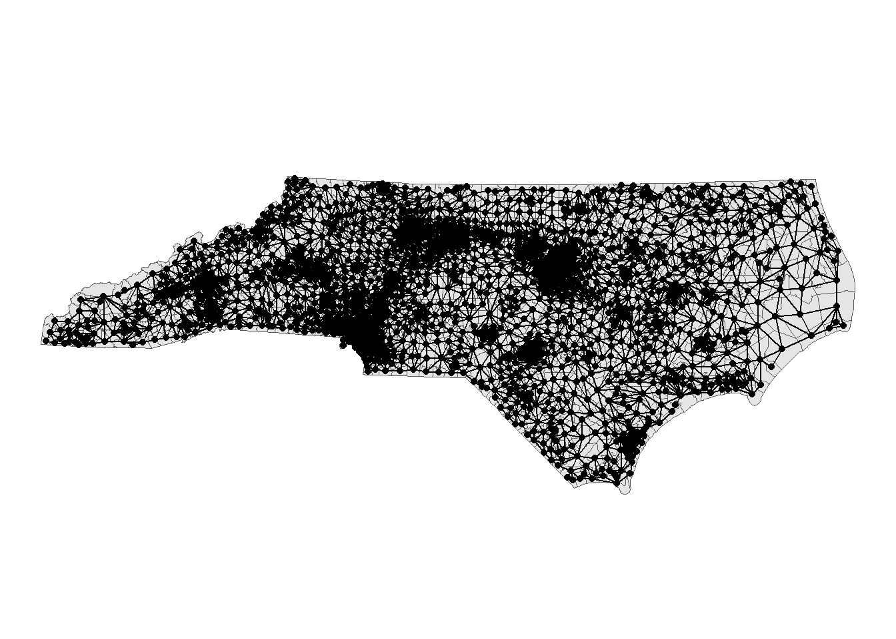
You may need to fix the adjacency list manually with the geomander package, particularly when there are bodies of water or islands connected by bridges.
Further Pre-Processing
Often, we want to only analyze a portion of a map, or hold some districts fixed while others are re-simulated. We may also want to implement a status-quo-type constraint that encourages simulated districts to be close to a reference plan. This can be accomplished by freezing the “cores” of each district.
All of these operations fall under the umbrella of map pre-processing, and redist is well-equipped to handle them.
The map pre-processing vignette contains more information and examples about these operations.
Simulating redistricting plans
Sampling Algorithms
As discussed above, we want to create counterfactual plans by obtaining a representative sample with simulation algorithms. The redist package has three functions that use Sequential Monte Simulations (redist_smc) and Markov Chain Monte Carlo (redist_flip and redist_mergesplit) algorithms. In this section, we will pick up redist_smc, which generates nearly independent congressional or legislative redistricting plans according to contiguity, population, compactness, and administrative boundary constraints. For the details of the functions, check the following.
redist_smc
Once the redist_map is ready, we can run the simple simulations. Here, let’s try generating five hundred simulated plans for North Carolina. Note that we can ask redist_smc to produce five hundred plans by combining two separate simulation runs. This ensures that the algorithm “converges”–that is, that the distribution of plans we obtain is stable.
smc_plans_basic <- redist_smc(map_nc, nsims = 500, runs = 4L) |>
mutate(
plan_dev = plan_parity(map_nc),
comp_edge = distr_compactness(map_nc),
county_splits = county_splits(map_nc, map_nc$county),
e_dvs = partisan_metrics(map_nc, "DVS", nrv, ndv)
)Now, you have got 2,000 plans. The output of the simulations is redist_plans format. The followings are the first six plans generated by the simulations, and you can plot them.
redist.plot.plans(smc_plans_basic, draws = 1:6, shp = map_nc)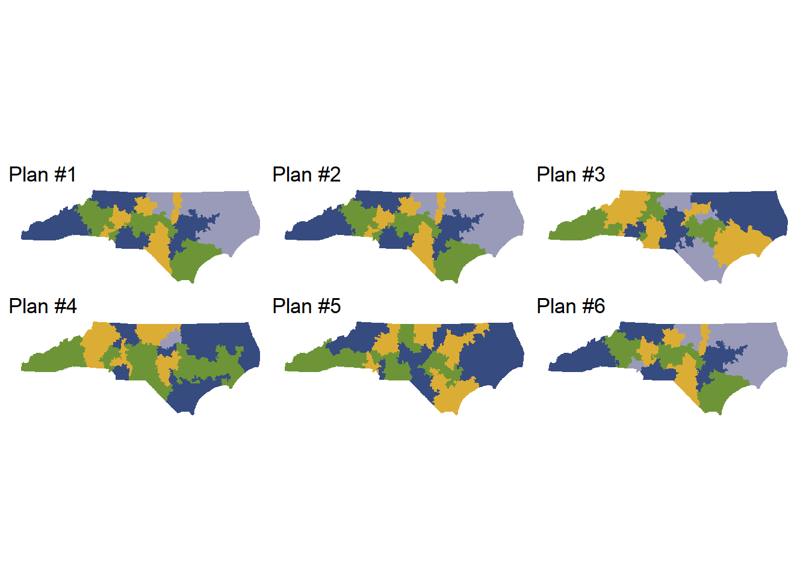
Using the summary function, we can perform a diagnostic check to ensure that our plans have converged and are diverse (in other words, that we are exploring a sufficient space of possible alternative plans, rather than simulating the same plan over and over again).
summary(smc_plans_basic)
R-hat values for summary statistics:
plan_dev comp_edge county_splits e_dvs
1.032 ❌1.056 1.031 ❌1.104 Eff. samples (%) Acc. rate Log wgt. sd Max. unique Est. k
Split 1 463 (92.5%) 22.1% 0.52 311 ( 98%) 6
Split 2 468 (93.5%) 31.7% 0.50 314 ( 99%) 4
Split 3 470 (94.0%) 26.9% 0.48 328 (104%) 4
Split 4 467 (93.4%) 30.0% 0.50 308 ( 97%) 3
Split 5 466 (93.1%) 36.8% 0.51 315 (100%) 2
Split 6 449 (89.9%) 25.6% 0.58 314 ( 99%) 3
Split 7 426 (85.3%) 23.8% 0.64 307 ( 97%) 3
Split 8 406 (81.2%) 28.8% 0.77 294 ( 93%) 2
Split 9 420 (84.0%) 26.9% 0.76 314 ( 99%) 2
Split 10 435 (87.0%) 16.3% 0.72 305 ( 97%) 3
Split 11 423 (84.5%) 19.9% 0.75 294 ( 93%) 2
Split 12 431 (86.2%) 11.5% 0.75 283 ( 90%) 3
Split 13 442 (88.3%) 6.1% 0.68 259 ( 82%) 2
Resample 299 (59.7%) NA% 0.68 362 (115%) NA Eff. samples (%) Acc. rate Log wgt. sd Max. unique Est. k
Split 1 465 (92.9%) 22.0% 0.51 313 ( 99%) 6
Split 2 469 (93.7%) 23.5% 0.50 318 (101%) 5
Split 3 463 (92.7%) 26.9% 0.53 300 ( 95%) 4
Split 4 466 (93.2%) 30.9% 0.51 310 ( 98%) 3
Split 5 434 (86.8%) 29.4% 0.61 322 (102%) 3
Split 6 441 (88.2%) 25.9% 0.64 289 ( 91%) 3
Split 7 452 (90.4%) 30.8% 0.59 303 ( 96%) 2
Split 8 403 (80.7%) 30.8% 0.67 299 ( 95%) 2
Split 9 382 (76.4%) 28.6% 0.77 308 ( 97%) 2
Split 10 428 (85.6%) 18.3% 0.74 289 ( 91%) 3
Split 11 330 (66.0%) 20.1% 0.79 284 ( 90%) 2
Split 12 335 (67.1%) 13.2% 0.86 275 ( 87%) 2
Split 13 434 (86.7%) 4.5% 0.70 267 ( 84%) 2
Resample 263 (52.6%) NA% 0.70 352 (111%) NA Eff. samples (%) Acc. rate Log wgt. sd Max. unique Est. k
Split 1 463 (92.6%) 17.6% 0.52 318 (101%) 8
Split 2 468 (93.6%) 23.1% 0.51 308 ( 97%) 5
Split 3 468 (93.5%) 26.3% 0.50 310 ( 98%) 4
Split 4 463 (92.5%) 31.2% 0.53 305 ( 97%) 3
Split 5 450 (90.0%) 29.4% 0.57 310 ( 98%) 3
Split 6 454 (90.8%) 15.4% 0.59 304 ( 96%) 5
Split 7 440 (88.1%) 19.1% 0.63 315 (100%) 4
Split 8 442 (88.3%) 21.1% 0.65 314 ( 99%) 3
Split 9 444 (88.8%) 26.1% 0.65 308 ( 97%) 2
Split 10 426 (85.2%) 22.5% 0.71 282 ( 89%) 2
Split 11 433 (86.5%) 13.8% 0.72 290 ( 92%) 3
Split 12 443 (88.7%) 15.1% 0.66 289 ( 91%) 2
Split 13 445 (89.0%) 5.1% 0.65 261 ( 83%) 2
Resample 290 (58.0%) NA% 0.65 367 (116%) NA Eff. samples (%) Acc. rate Log wgt. sd Max. unique Est. k
Split 1 466 (93.1%) 16.0% 0.50 331 (105%) 8
Split 2 466 (93.3%) 23.0% 0.50 316 (100%) 5
Split 3 468 (93.6%) 21.6% 0.49 325 (103%) 5
Split 4 464 (92.9%) 31.2% 0.51 320 (101%) 3
Split 5 462 (92.3%) 27.4% 0.52 308 ( 97%) 3
Split 6 460 (92.0%) 26.2% 0.57 318 (101%) 3
Split 7 437 (87.4%) 18.3% 0.66 305 ( 97%) 4
Split 8 445 (89.0%) 17.0% 0.64 302 ( 96%) 4
Split 9 432 (86.5%) 20.0% 0.68 293 ( 93%) 3
Split 10 434 (86.7%) 24.5% 0.72 290 ( 92%) 2
Split 11 445 (88.9%) 13.2% 0.67 286 ( 90%) 3
Split 12 431 (86.1%) 15.5% 0.71 285 ( 90%) 2
Split 13 434 (86.8%) 5.7% 0.69 256 ( 81%) 2
Resample 241 (48.3%) NA% 0.69 361 (114%) NA Constraints
The simulation output from the SMC is unbiased random sample, but not always mean representative. Since each state (or equivalent) has a different legal requirements for the redistricting plan, representative sample has to be in the resemble the space of legal possibilities. Thus, we need to customize the constraints to operationalize legal requirements and norms. For example, in some cases, each district has to have an equal population, while the margins of tolerance exist, which can be varied by the state. To adjust to that rule, we can customize the constraints as you can see below. In redist, you can add both hard and soft constraints.
Hard Constraints
- Population Tolerance (
pop_tol= 0.0x) – all plans must be within x% of population equality. - Contiguity – all plans must be contiguous
- County splits – all plans must have up to a small number of splits
Soft Constraints
redistallows you to add soft constraints that are listed here- Using
add_constr_xyz()(xyzvaries depending on the constraints you want to add) functions, you can add constraints on the redistricting process to be encoded in the target distribution for sampling ofredist_smc()andredist_mergesplit() - Note that higher and higher strength values will eventually cause the algorithm’s accuracy and efficiency to suffer, so be sure to check all sampling diagnostics.
Example
Change Population Tolerance
You can use get_pop_tol() function to check the current population tolerance of redist_map object.
get_pop_tol(map_nc)[1] 0.005As you can see above, the population tolerance of map_nc is 0.005. This means that all plans must be within 0.5% of population equality. This is why you can see the output message of redist_smc() shows following.
redist_smc(map_nc, 10)SEQUENTIAL MONTE CARLO
Sampling 10 2666-unit maps with 14 districts and population between 741942 and 749399.With plans resampled from weights
Plans matrix: int [1:2666, 1:11] 1 1 1 1 1 1 1 1 1 1 ...
# A tibble: 154 × 3
draw district total_pop
<fct> <int> <dbl>
1 cd_2020 1 745033
2 cd_2020 2 744646
3 cd_2020 3 747128
4 cd_2020 4 745889
5 cd_2020 5 745852
6 cd_2020 6 745599
7 cd_2020 7 746762
8 cd_2020 8 745420
9 cd_2020 9 747640
10 cd_2020 10 746272
# ℹ 144 more rowsAs you can see, all the total_pop should be within between 741,942 and 749,399, which is 0.5% of population equality.
Then, let’s change the population tolerance with set_pop_tol() function. Here, we will set pop_tol into 0.05 (5%).
map_nc_constr <- set_pop_tol(map_nc, 0.05)
redist_smc(map_nc_constr, 10)SEQUENTIAL MONTE CARLO
Sampling 10 2666-unit maps with 14 districts and population between 708387 and 782954.With plans resampled from weights
Plans matrix: int [1:2666, 1:11] 1 1 1 1 1 1 1 1 1 1 ...
# A tibble: 154 × 3
draw district total_pop
<fct> <int> <dbl>
1 cd_2020 1 745033
2 cd_2020 2 744646
3 cd_2020 3 747128
4 cd_2020 4 745889
5 cd_2020 5 745852
6 cd_2020 6 745599
7 cd_2020 7 746762
8 cd_2020 8 745420
9 cd_2020 9 747640
10 cd_2020 10 746272
# ℹ 144 more rowsNow, as the population tolerance changes, the possible range of total_pop expanded between 708,387 and 782,954.
Administrative Boundary Splits
We can also add a soft constraints to the simulation. Here, we will try to add a constraint that prefers the fewer county splits by creating redist_constr object.
constr <- redist_constr(map_nc_constr)
constr <- add_constr_splits(constr, strength = 1.5, admin = county)
smc_plans_constr <- redist_smc(
map = map_nc,
nsims = 500,
runs = 4L,
constraints = constr
)redist_plans Output
Changing the constraints means changing the output sample of the simulations. Although we are going to explain in detail how to evaluate and analyze the simulation output with certain measures, here let’s see how the constraints changed the population deviation of the simulation outcome.
# original constraints
smc_plans_basic |>
group_by(draw) |>
summarize(pop_dev = max(abs(total_pop / mean(total_pop) - 1))) |>
redist.plot.hist(pop_dev, bins = 10) +
xlim(c(0.003, 0.0055)) +
theme_bw()
# customized constraints
smc_plans_constr |>
group_by(draw) |>
summarize(pop_dev = max(abs(total_pop / mean(total_pop) - 1))) |>
redist.plot.hist(pop_dev, bins = 10) +
xlim(c(0.003, 0.0055)) +
theme_bw()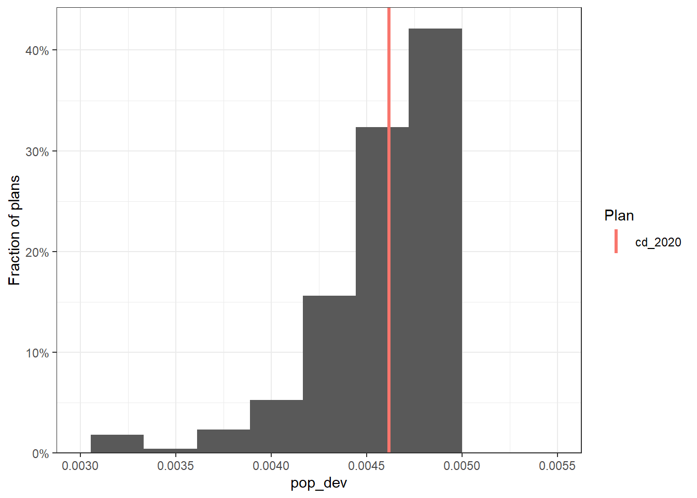
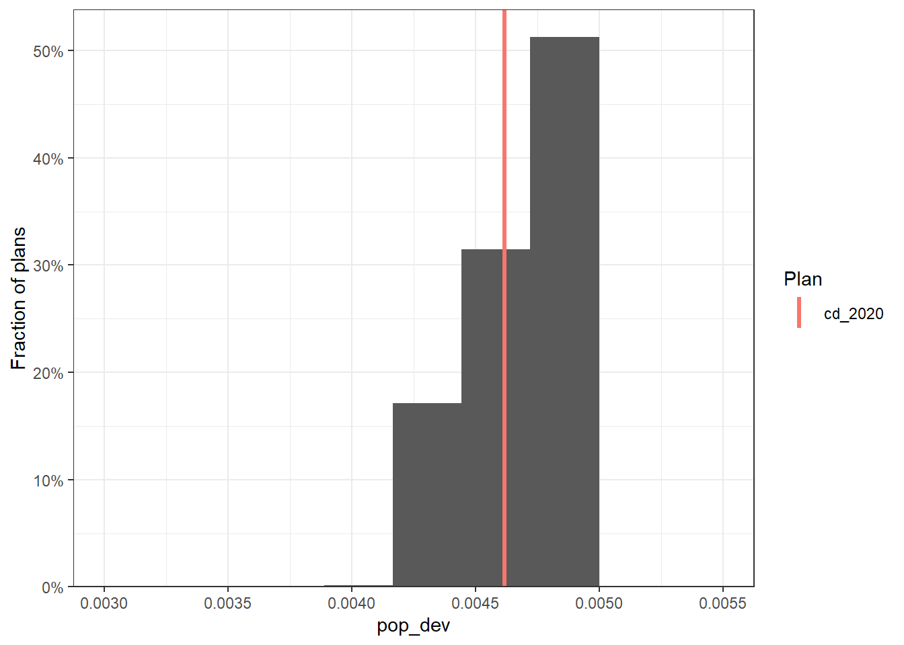
North Carolina Analysis Example
We will now demonstrate an example of redistricting analysis using the simulated plans from the 50-States Project.
Setup
First, we load the required packages for analysis. We also load the code for generating the validation plots, which will help us create visualizations for the summary statistics of the simulations.
knitr::opts_chunk$set(echo = FALSE)
library(tidyverse)
library(alarmdata)
library(redist)
library(geomander)
library(here)
library(sf)
source("fifty-states/validate.R")Download Simulation Data
We can access data from all 50 states in the US using the alarmdata package. Here, we use North Carolina as an example: alarm_census_vest() downloads geographic, demographic, and election data, alarm_50state_map() loads the redist_map object that contains precinct geometries and adjacencies, and alarm_50state_plans() downloads the redist_plans object that contains 5000 pre-simulated redistricting plans from the 50-State Redistricting Simulations.
The code for how these plans were generated is available on the 50-State GitHub repository.
Specifically in North Carolina, districts must: 1) be contiguous 2) have equal populations 3) be geographically compact 4) preserve county boundaries as much as possible. Each of these redistricting requirements, in addition to compliance with the 1965 Voting Rights Act, were closely followed when conducting the simulations.
Visualization
We can plot some of the simulated plans to visualize the geographical boundaries of the simulated districts.
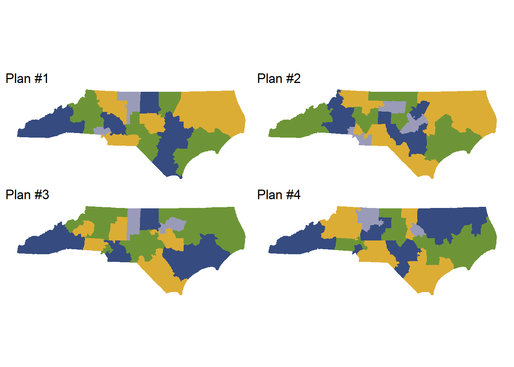
We can also plot the VI distance of each plan, which measures how different the simulated plans are from one another. In the following plot, the VI distances are mostly within the range 0.5-1.0, which means that the simulated plans include a diverse set of geographical arrangements.
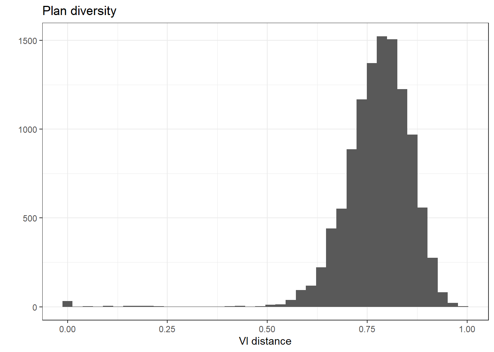
We can also visualize the compactness of entire plans. The following plot shows the compactness of the simulated plans at the plan level, using the Fraction of Edges Kept measure. The compactness of the NC 2020 enacted plan is within the mid-upper range of the simulated plans, suggesting that the plans were constructed with appropriate compactness considerations.
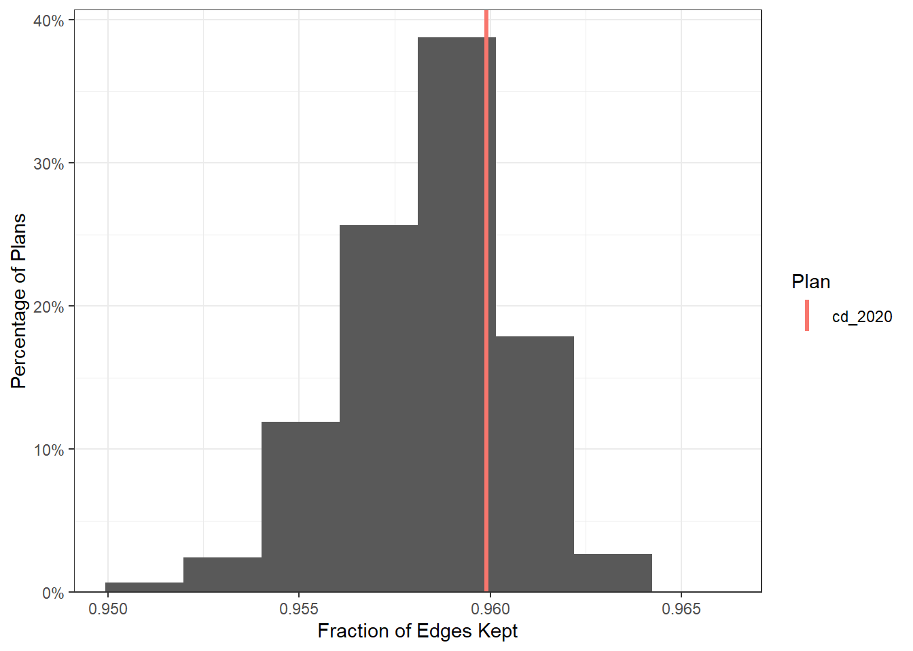
The following plot displays the distribution of compactness across the simulated plans at the district level, using the Polsby-Popper compactness measure.
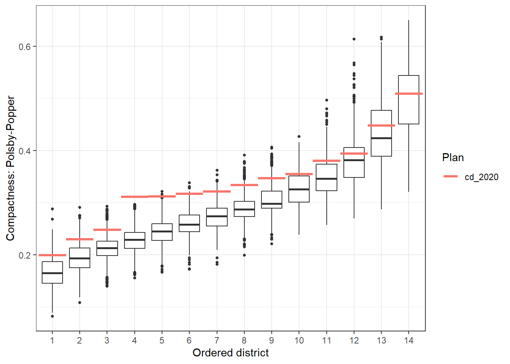
Simulation Evaluation
To evaluate the performance of the simulations, we can use summary(plans) to check for any bottlenecks or efficiency losses. Be sure to check that all R-hat values are below 1.05 and that the SMC runs have converged. For NC, 2 runs of 10,000 simulations is the typical size needed for convergence. Example summary statistics for fully converged simulation runs are pasted below.
SMC: 20,000 sampled plans of 14 districts on 2,666 units
`adapt_k_thresh`=0.985 • `seq_alpha`=0.5
`est_label_mult`=1 • `pop_temper`=0.01
Plan diversity 80% range: 0.69 to 0.87
R-hat values for summary statistics:
pop_overlap total_vap plan_dev comp_edge comp_polsby pop_hisp pop_white pop_black pop_aian
1.011740 1.004010 1.016022 1.006402 1.007232 1.011292 1.001015 1.008898 1.000115
pop_asian pop_nhpi pop_other pop_two vap_hisp vap_white vap_black vap_aian vap_asian
1.027659 1.001441 1.040853 1.000344 1.011211 1.001468 1.005998 1.000307 1.030569
vap_nhpi vap_other vap_two pre_16_rep_tru pre_16_dem_cli uss_16_rep_bur uss_16_dem_ros gov_16_rep_mcc gov_16_dem_coo
1.006742 1.039742 1.003739 1.014649 1.041666 1.011259 1.037633 1.011370 1.036032
atg_16_rep_new atg_16_dem_ste sos_16_rep_lap sos_16_dem_mar pre_20_rep_tru pre_20_dem_bid uss_20_rep_til uss_20_dem_cun gov_20_rep_for
1.012634 1.036626 1.010377 1.033683 1.012790 1.048726 1.009076 1.047310 1.013620
gov_20_dem_coo atg_20_rep_one atg_20_dem_ste sos_20_rep_syk sos_20_dem_mar arv_16 adv_16 arv_20 adv_20
1.046216 1.009898 1.044914 1.009182 1.044455 1.010635 1.036324 1.010868 1.046275
county_splits muni_splits ndv nrv ndshare e_dvs pr_dem e_dem pbias
1.004991 1.014032 1.043048 1.012762 1.028974 1.028886 1.044242 1.006234 1.006050
egap
1.004837
Sampling diagnostics for SMC run 1 of 2
Eff. samples (%) Acc. rate Log wgt. sd Max. unique Est. k
Split 1 8,041 (80.4%) 11.5% 0.43 6,354 (101%) 12
Split 2 7,829 (78.3%) 17.7% 0.54 5,974 ( 95%) 7
Split 3 7,698 (77.0%) 22.3% 0.61 5,852 ( 93%) 5
Split 4 7,560 (75.6%) 31.0% 0.65 5,867 ( 93%) 3
Split 5 7,423 (74.2%) 18.4% 0.68 5,671 ( 90%) 5
Split 6 7,445 (74.5%) 20.7% 0.70 5,740 ( 91%) 4
Split 7 7,552 (75.5%) 19.2% 0.72 5,709 ( 90%) 4
Split 8 7,442 (74.4%) 23.1% 0.71 5,675 ( 90%) 3
Split 9 7,390 (73.9%) 21.1% 0.73 5,696 ( 90%) 3
Split 10 7,515 (75.2%) 14.3% 0.73 5,664 ( 90%) 4
Split 11 7,669 (76.7%) 15.5% 0.72 5,482 ( 87%) 3
Split 12 7,820 (78.2%) 11.8% 0.70 5,334 ( 84%) 3
Split 13 7,423 (74.2%) 4.0% 0.77 4,850 ( 77%) 3
Resample 2,891 (28.9%) NA% 1.21 4,691 ( 74%) NA
Sampling diagnostics for SMC run 2 of 2
Eff. samples (%) Acc. rate Log wgt. sd Max. unique Est. k
Split 1 8,087 (80.9%) 15.5% 0.43 6,267 ( 99%) 9
Split 2 7,872 (78.7%) 20.2% 0.54 5,938 ( 94%) 6
Split 3 7,650 (76.5%) 21.9% 0.60 5,908 ( 93%) 5
Split 4 7,565 (75.7%) 24.5% 0.65 5,812 ( 92%) 4
Split 5 7,380 (73.8%) 18.5% 0.68 5,786 ( 92%) 5
Split 6 7,431 (74.3%) 27.1% 0.71 5,693 ( 90%) 3
Split 7 7,455 (74.6%) 19.4% 0.73 5,683 ( 90%) 4
Split 8 7,509 (75.1%) 23.0% 0.73 5,720 ( 90%) 3
Split 9 7,523 (75.2%) 12.8% 0.71 5,734 ( 91%) 5
Split 10 7,509 (75.1%) 13.9% 0.70 5,664 ( 90%) 4
Split 11 7,403 (74.0%) 9.4% 0.74 5,542 ( 88%) 5
Split 12 7,589 (75.9%) 11.9% 0.73 5,351 ( 85%) 3
Split 13 7,744 (77.4%) 4.1% 0.72 4,926 ( 78%) 3
Resample 3,593 (35.9%) NA% 1.15 4,889 ( 77%) NAWe can also run validate_analysis(plans, map) to generate a set of useful simulation visualizations.
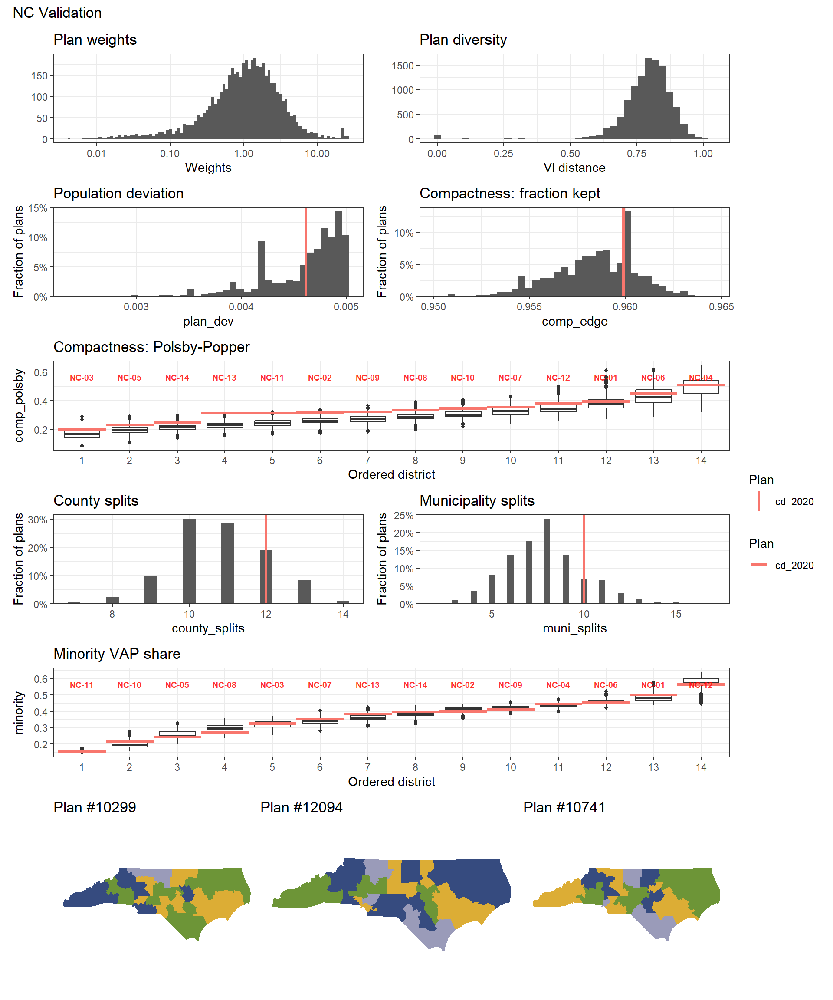
Comparing Custom Plans
The 50-State redist_plans objects include data for the 2020 enacted districting plans. However, analysts might want to compare other custom plans to the 50-State simulations. This can be done with alarm_add_plan(). The following example adds one of the previously proposed 2020 congressional maps for North Carolina as a reference plan to the plans_nc object. Many submitted maps are publicly available online on sites such as Redistricting Data Hub, All About Redistricting, or state government websites. The North Carolina enacted and proposed maps came from the North Carolina General Assembly.
After the old reference plan has been added, we can compare the simulation statistics to both the previously proposed plan, labeled cd_2020_ex, and the currently enacted plan, labeled cd_2020. The following code plots the number of county splits, and we can see that the current plan actually splits more counties than the previous plan.
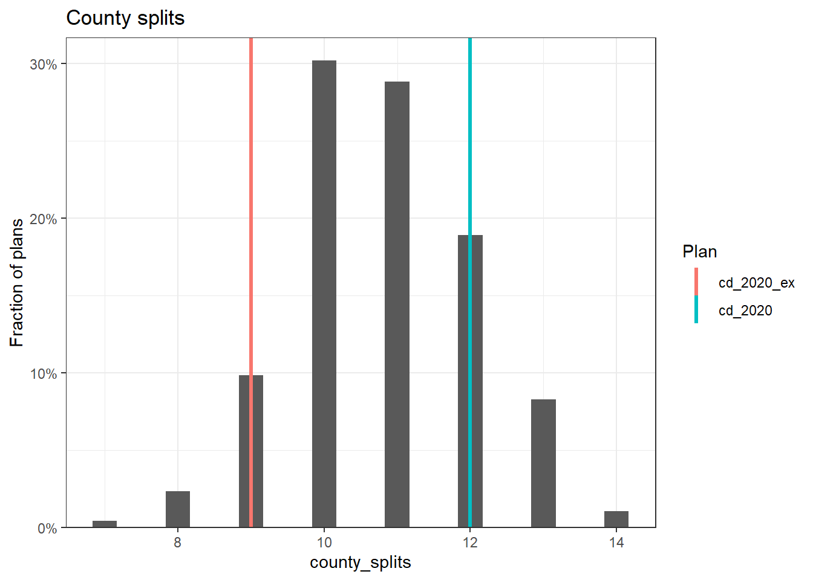
We can compare distributions of different summary statistics across districts. The following boxplots display the distribution of Democratic vote percentage across each district. This plot shows that there are more majority-Democratic districts in the current plan than in the previously ratified plan, due to less packing of voters.
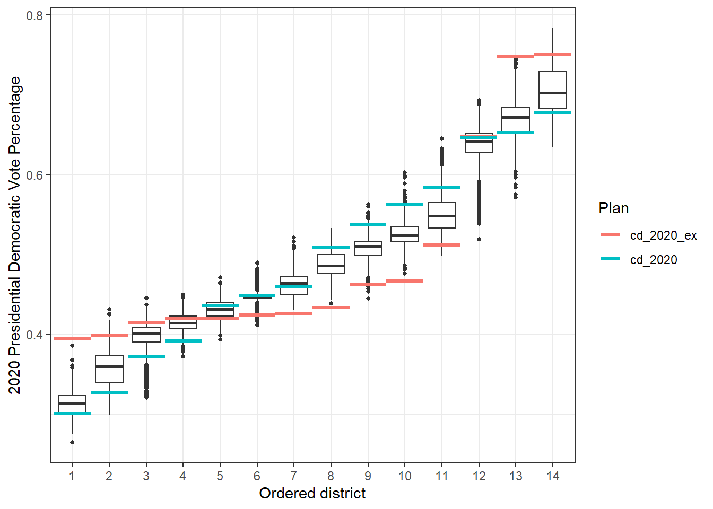
Similarly, we can visualize the minority voting age population (VAP) percentage in each district. This plot shows that voters are less packed in the highest MVAP districts, leading to more opportunity districts.
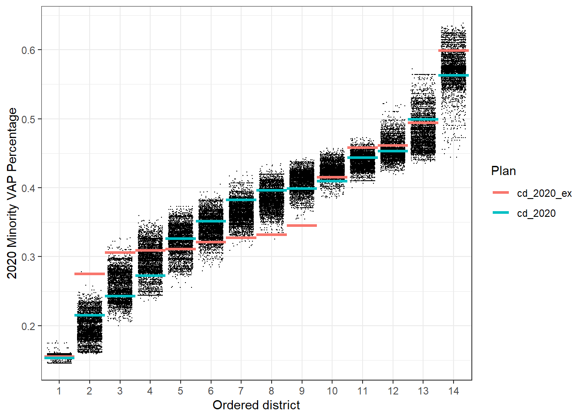
Overall, although the newly enacted plan split more counties than the previously proposed plan, the partisan and demographic metrics of the current plan are not among the far outliers of the simulation diagnostics, suggesting that the current plan is a more representative configuration given the specific redistricting requirements in North Carolina.